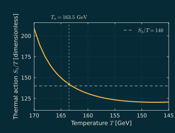
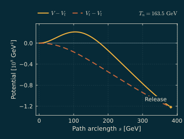
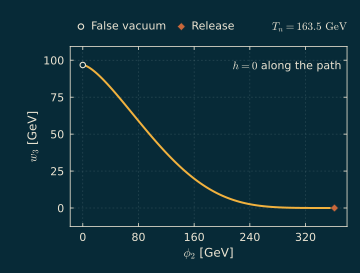

Two steps on cooling
I looked at the BM1 benchmark of Ghosh, Guo, Han and Liu (dark SU(2) sector coupled to the SM via the Higgs portal). In my leading order high T calculation the dark field w3 develops a nonzero value continuously at 191.5 GeV, and a subsequent first order transition nucleates at 163.5 GeV and percolates at 159.1 GeV (for a bubble wall speed of 0.9c). The nucleation temperature is about 92% of the critical temperature (177.1 GeV) so the supercooling is quite mild. The transition strength α (defined from the latent heat) is 0.115 at nucleation and 0.154 at percolation, with β/H at 717 and 311 respectively. I've computed the tunneling actions with my own multifield solver (which uses the tunneling potential method of Espinosa and Konstandin (2019)).


The critical bubble
I've computed the thermal tunneling action by minimizing the O(3) tunneling potential functional directly in field space, allowing both the path and the release point to vary. The actions agree with FindBounce to within 0.004% at the three temperatures that I've checked. At nucleation the Higgs field is zero everywhere in the critical bubble. The lower energy equilibrium phase that it can relax into has a nonzero Higgs field.


The model
- Electroweak Phase Transition with an SU(2) Dark SectorarXiv:2012.09758Journal